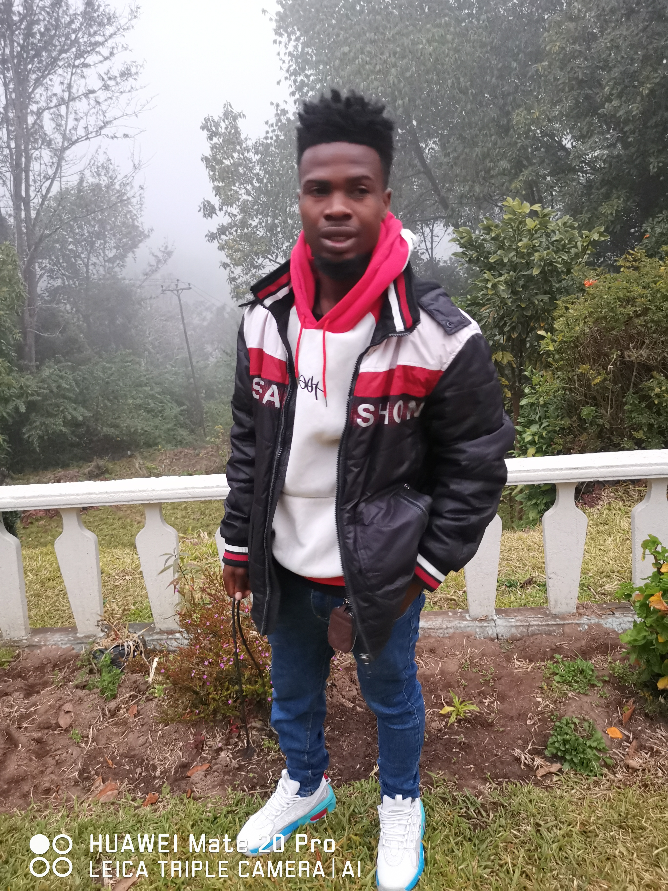

Ngonidzaishe Godfrey Chareka
About Me

Hello! I’m Ngonidzaishe Chareka from Zimbabwe. I’m currently studying Software Development at BYU–Idaho through BYU Pathway. I enjoy learning how websites work and applying HTML, CSS, and JavaScript to bring ideas to life.
My Interests
I’m passionate about building useful and beautiful websites. I love working with clean designs, learning new frameworks, and exploring how technology connects people. My goal is to become a full-stack developer and create solutions that help others.